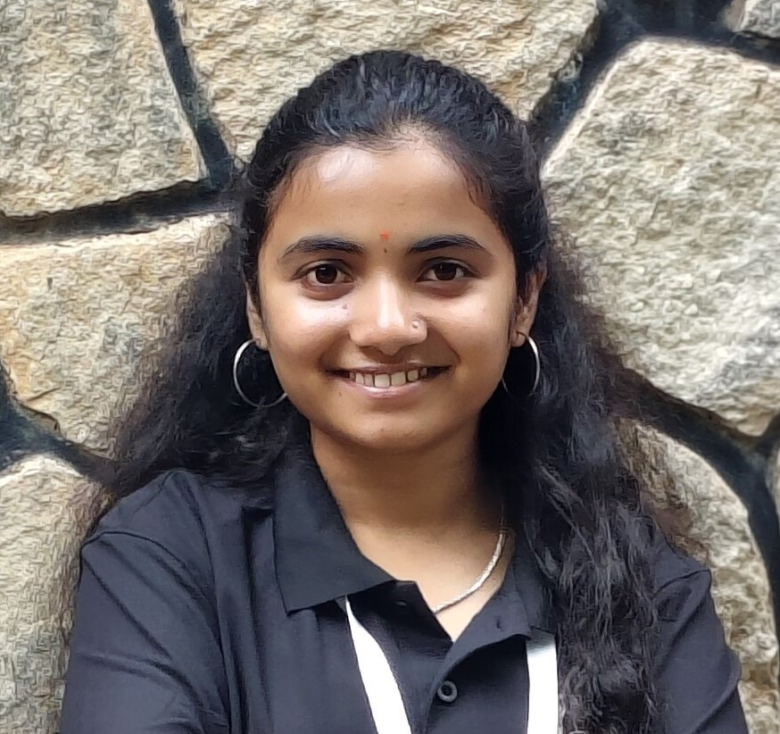

Hello, I'm Vidyashree V
Seeking a position to utilize my skills
to company sucess and personal growth
About Me
I am Vidyashree V, a recent MCA graduate from Bengaluru University, with a strong passion for building a career in Information Technology. As an aspiring software developer, I am dedicated to continuously strengthening my technical skills, with a primary focus on Python.
Throughout my academic journey, I have developed a solid foundation in Python for backend development, along with a good understanding of web technologies such as HTML, CSS, and JavaScript for building interactive user interfaces.
I have also explored full-stack development using the Django framework, where I built projects such as a Smart Question Paper Generator and a College Event Management System. These projects helped me gain practical experience in developing scalable applications and integrating front-end and back-end components effectively.
I am currently seeking an opportunity where I can leverage my Python skills, gain mentorship, and grow as a professional while contributing meaningfully to the organization
Education
MCA(Master of computer Application)
Feb 2024-Nov 2025
Cgpa:7.8
Bengaluru University
BCA(Bachelor of computer Application)
Sep 2020-Aug 2023
Cgpa:8.4
Seshadripuram first grade college
PUC(PCMC)
May 2018-March 2020
Percentage:7.2%
Jindal Girls PU college
SSLC
June 2017-April 2018
Percentage:88.0%
B.N.R Public School